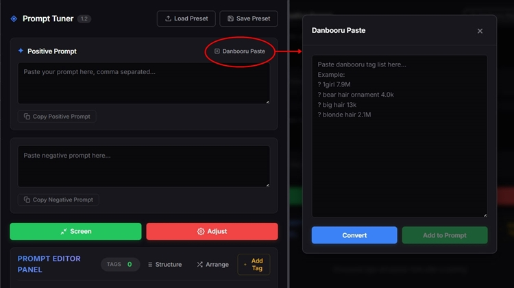
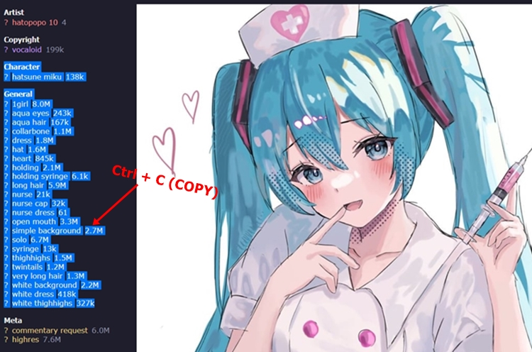
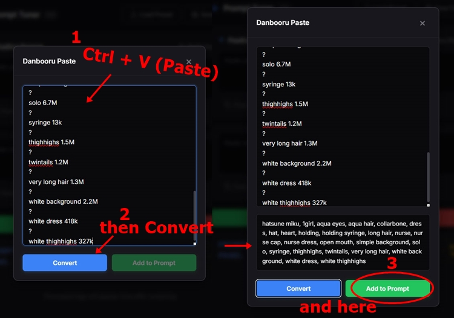
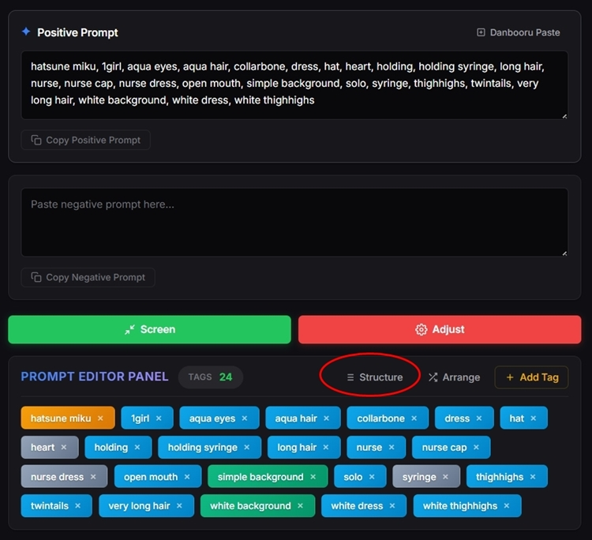
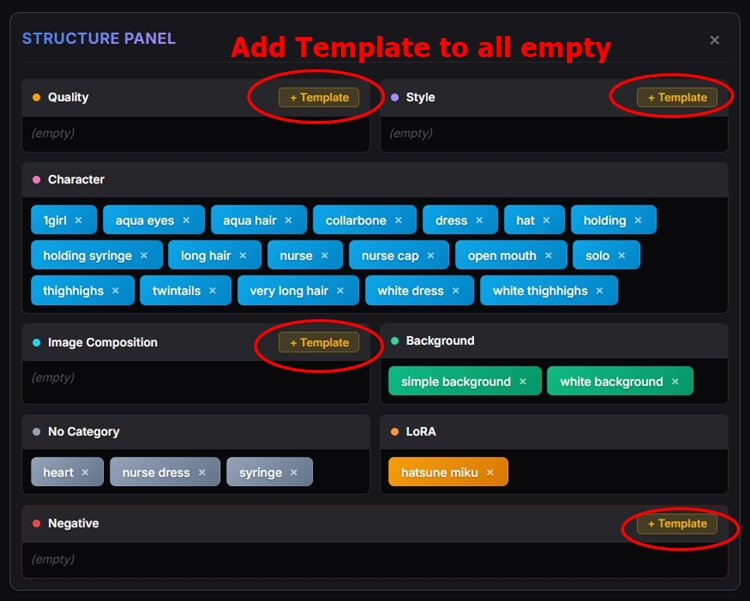
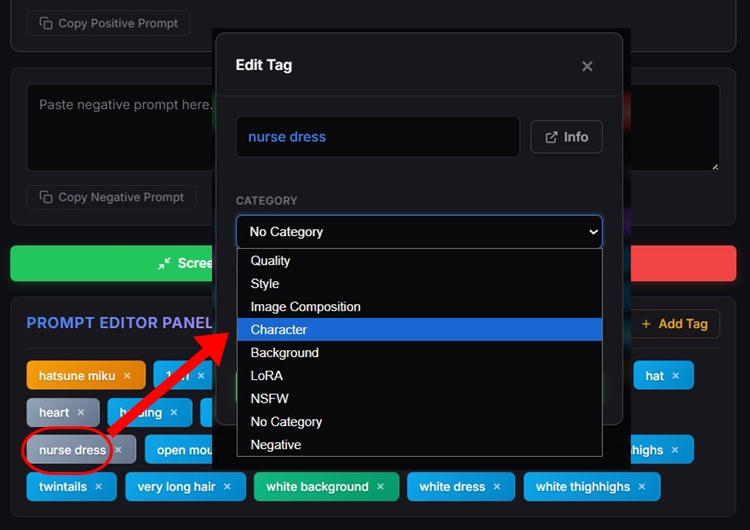
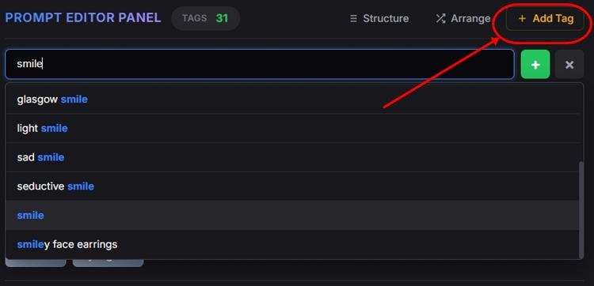
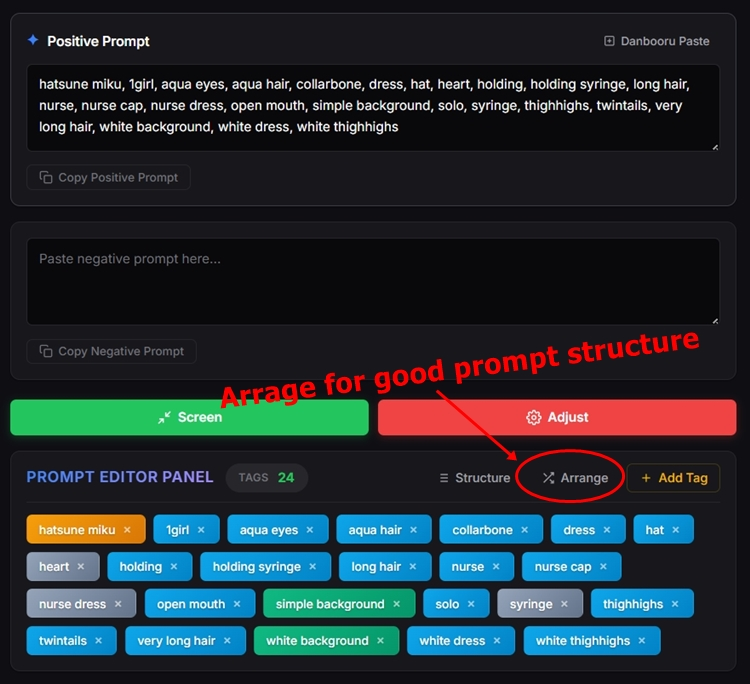
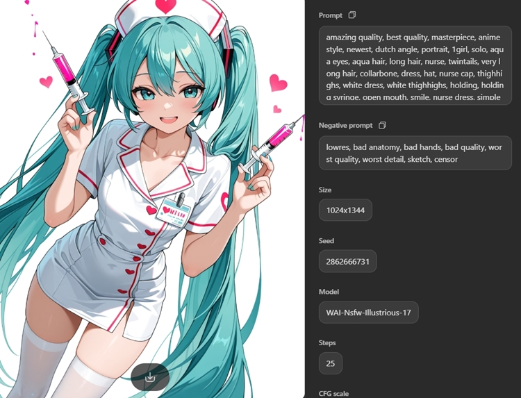
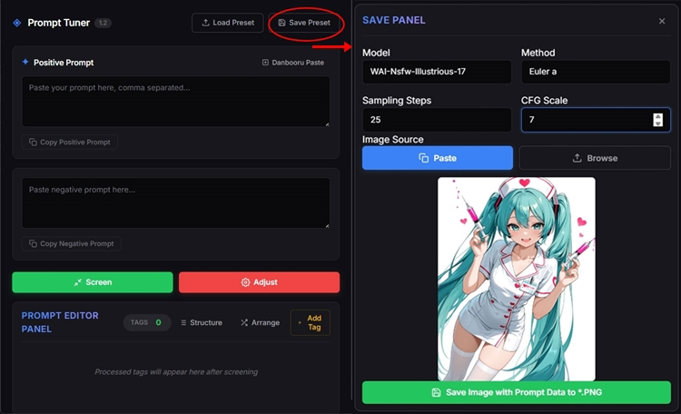

Start by clicking the Danbooru Paste button located in the top right corner of the Positive Prompt area. This will open a dedicated window for importing tags.

Go to Danbooru, find an image that matches your desired concept, and highlight the tag list on the left sidebar. Press Ctrl + C to copy the tags.

Return to Prompt Tuner and paste (Ctrl + V) the raw list into the Danbooru Paste window. Click Convert to instantly clean up formatting and remove irrelevant characters. Finally, click Add to Prompt to send the clean tags directly into your workspace.

Once your tags are loaded into the editor, click the Structure button. This opens a visual panel that categorizes all your current tags, helping you see exactly what elements are missing.

Inside the Structure Panel, look for essential categories that are currently empty (e.g., Quality, Style, Image Composition, or Negative Prompt). Click the + Template button to instantly inject optimized baseline tags into those specific categories.

Need to make manual adjustments? Simply click on any tag badge to open the Tag Editor. From here, you can reassign the tag to a different category or adjust its emphasis weight.

If you have specific concepts in mind that aren't in your current list, click the Add Tag button. You can manually type your desired tags, and the system will automatically categorize them based on the database while preventing any duplicates.

Make any final manual adjustments to your tags. When you are ready, hit the Arrange button. The system will automatically sort your tags into a logical hierarchy, ensuring the AI model prioritizes your prompt perfectly.

Copy your polished positive and negative prompts and paste them into your preferred AI image generator (such as Tensor.art, SeaArt, PixAI, Moescape AI, or local WebUI). Let the AI work its magic!

Don't lose a great prompt! Open the Save Panel in Prompt Tuner. Paste your generated artwork, fill in the generation metadata (Model, Method, Steps, CFG Scale), and click Save Image with Prompt Data to *.PNG. Your prompt is now securely embedded inside the image file, ready to be loaded via the "Load Preset" button anytime.
